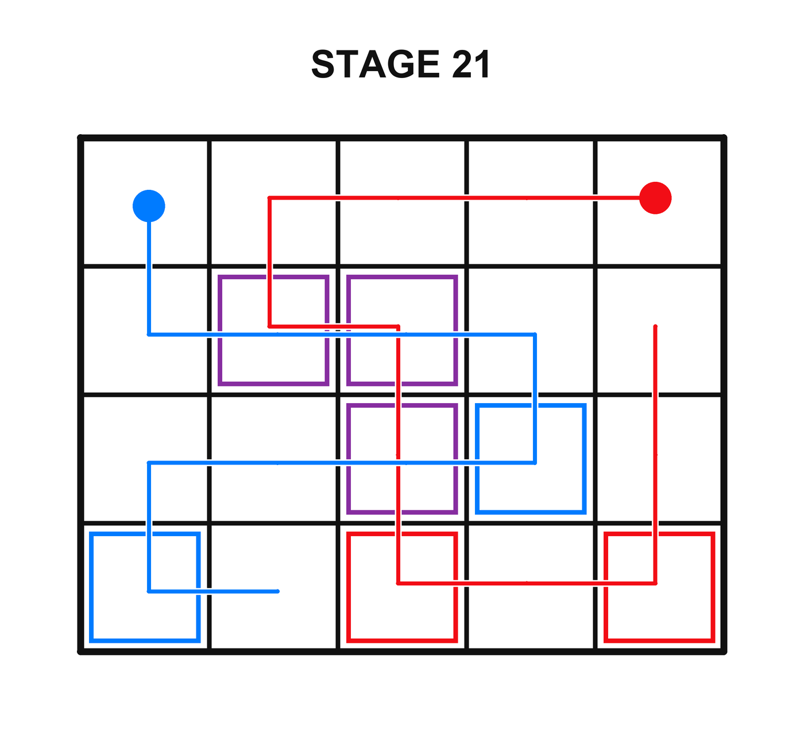
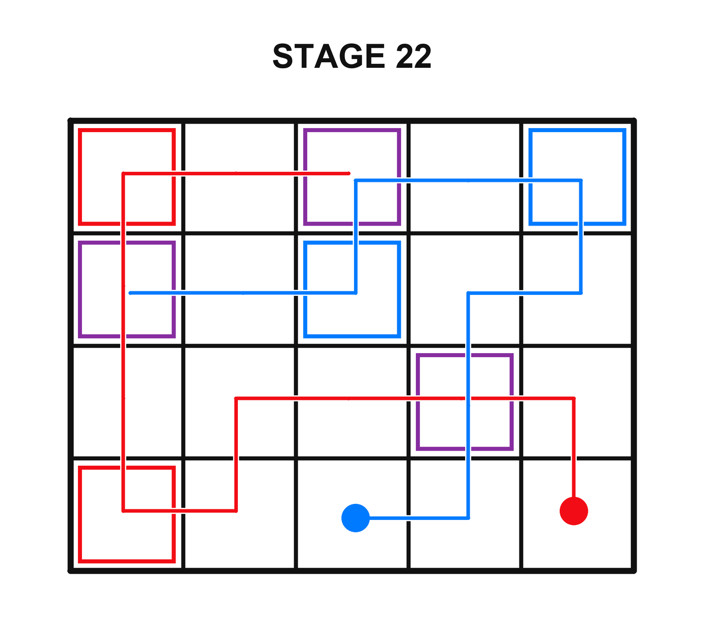
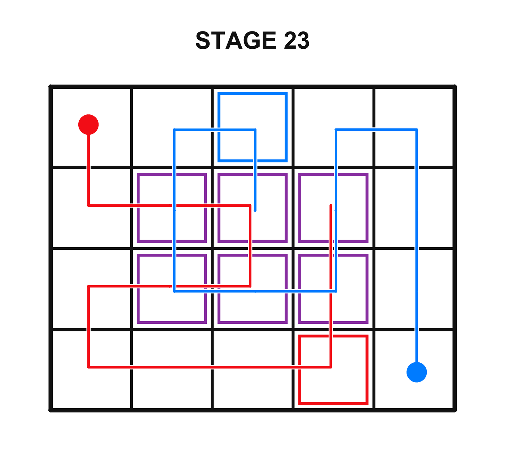
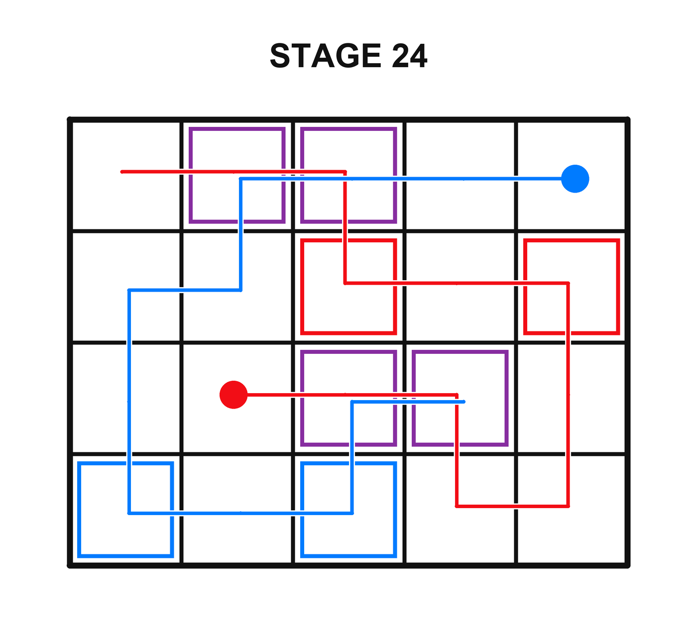
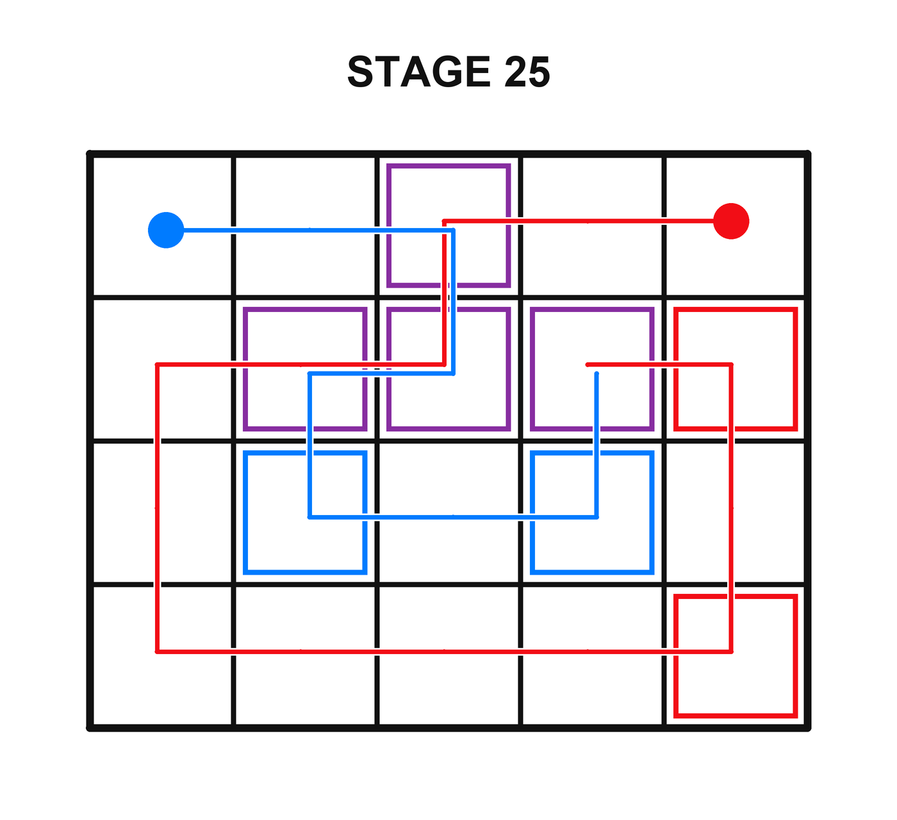
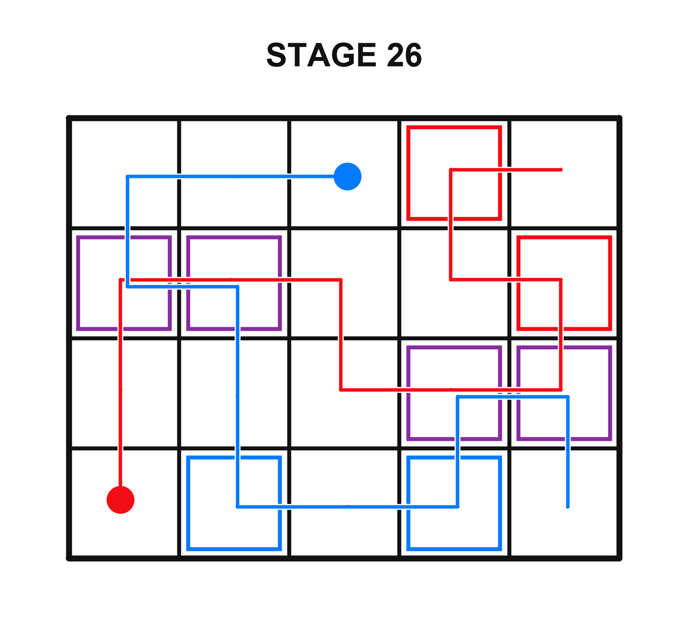
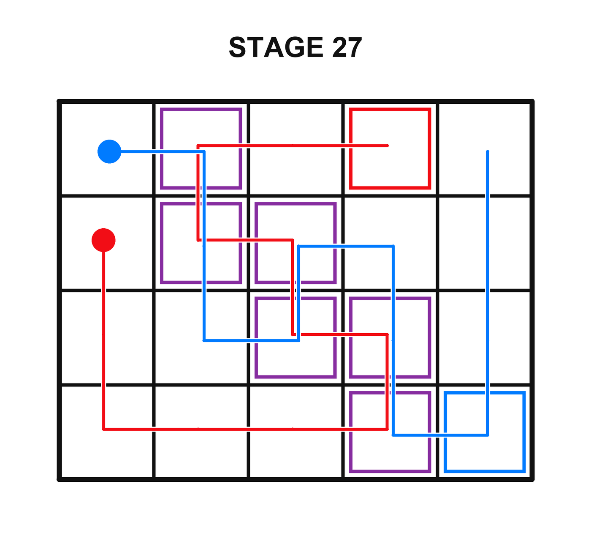
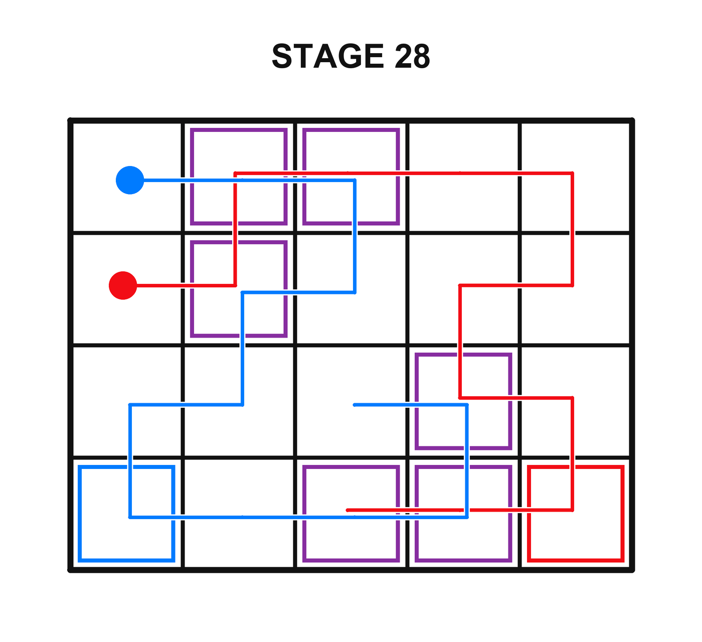
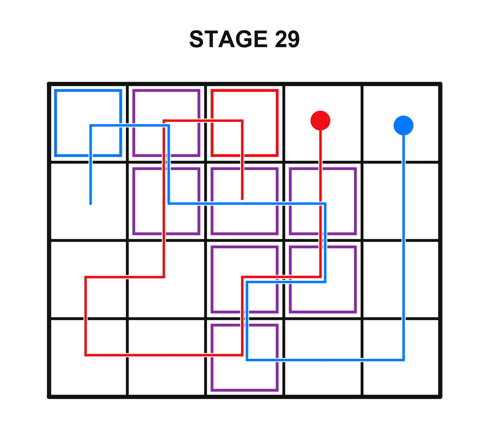
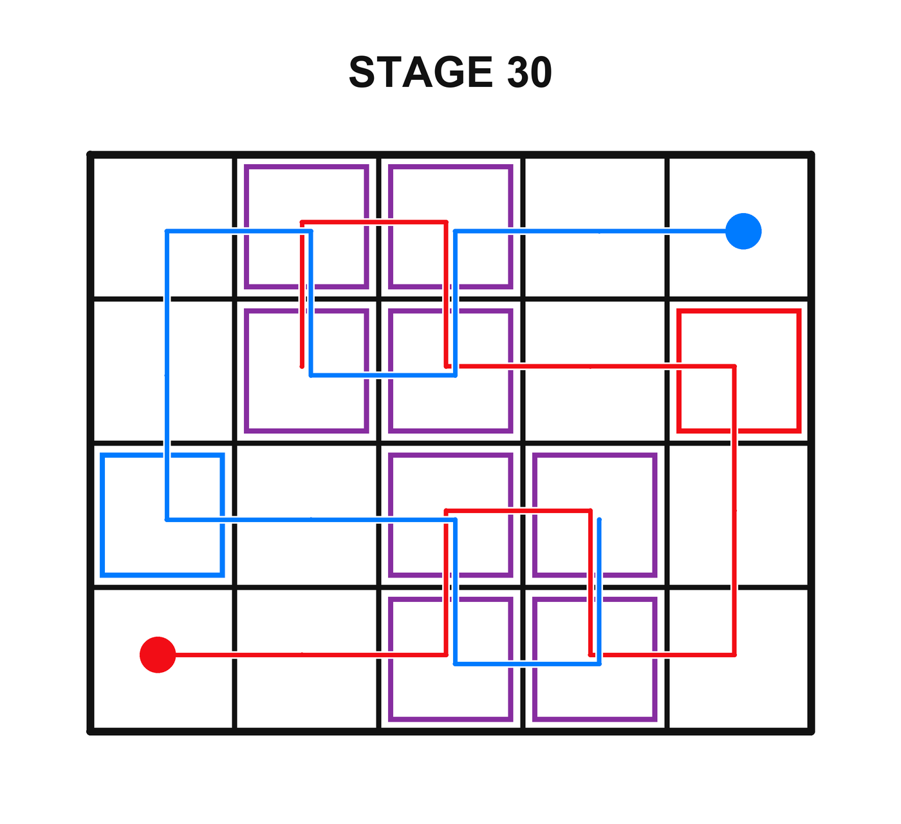

5列×4行。赤と青の開始点から一筆ずつなぞり、全マスを着色します。赤枠・青枠はその単色、紫枠は両方のルートが必要です。各画像をクリックすると原寸で開きます。

ひじ形の紫3マスを共有し、残った外側を赤と青で埋め分ける。
中級目安 · 紫 3マス

離れた3つの紫マスを両色で回収し、端に空白を残さない。

中央の2×3広場を両色で通り、外周の単色枠を守る。
中級目安 · 紫 6マス

上と下で位置がずれた横2マスのゲートをつなぐ。
中級目安 · 紫 4マス

T字の共有部分から抜ける位置を変え、単色の領域を確保する。
中級〜上級目安 · 紫 4マス

左右の端にある紫ゲートを、異なる回り道で結ぶ。

斜めに伸びる階段状の共有路と外側の回収を両立する。
中級〜上級目安 · 紫 6マス

対角に離れたL字の紫領域を両色でつなぐ。
上級目安 · 紫 6マス

中央の広い共有部分と上下の細い入口を通り抜ける。
上級目安 · 紫 7マス

斜めにつながる2つの2×2広場を共有する総合問題。
上級目安 · 紫 8マス
難易度は目安。全20マスの着色・隣接性・自己再訪なし・色指定への適合を自動検証済み。解答は一例で、唯一解は未検証です。